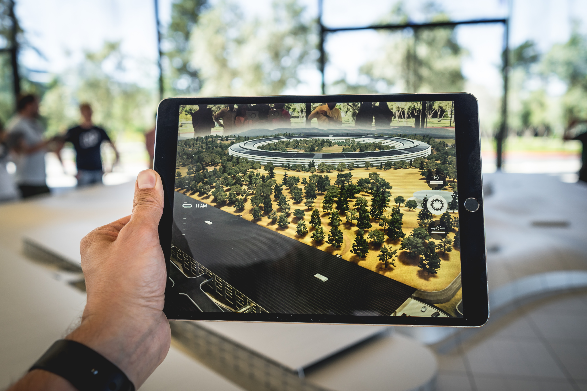

AI matters for higher education business continuity because the next generation of students(the children of millennials) will be accustomed to experiencing AI technologies in almost every facet of their lives.
This may require universities and colleges to rethink curriculums in a way that supports this cohort, also known as “Generation AI.”
This may require universities and colleges to rethink curriculums in a way that supports this cohort, also known as “Generation AI.”

More Investments in Quality Online Learning
Across the higher education landscape, many institutions have moved beyond emergency remote learning.
Many are continuing to invest in quality online learning programs.
Auburn University, for example, used 3D hotspots to create several excellent modules that simulate labs and galleries.
Many are continuing to invest in quality online learning programs.
Auburn University, for example, used 3D hotspots to create several excellent modules that simulate labs and galleries.

To address the problem at its root, the University of Wisconsin – Madison is offering a Master of Science in Educational Psychology: Learning Analytics program for students who will impact learning and policy.
The program teaches graduate students how to navigate the educational data mining landscape.
The program teaches graduate students how to navigate the educational data mining landscape.
Read More on: EDTech
Bio and Health Technology Trends

The number one health tech trend we have to keep an eye out for in 2021 is something the pandemic had a direct impact on this year: the growing use of remote medicine.
Prior to COVID-19, the greatest concern about telemedicine was patient adoption.
Simply put, patients had shown preference to meet doctors in person rather than by way of telehealth solutions.
The pandemic has radically transformed that, and experts believe that will open up a bright future for telemedicine.
Prior to COVID-19, the greatest concern about telemedicine was patient adoption.
Simply put, patients had shown preference to meet doctors in person rather than by way of telehealth solutions.
The pandemic has radically transformed that, and experts believe that will open up a bright future for telemedicine.
Research into healthcare applications of nanotechnology include a wide array of solutions: nanomaterials and devices (including nanorobots), biocompatible nanoparticles, nanoelectronic biosensors, etc for diagnosis, drug delivery, or other purposes.
Nanotechnology is already booming, with global funding increasing by 40-to-45 percent annually.
Nanotechnology is already booming, with global funding increasing by 40-to-45 percent annually.
Three-dimensional bioprinting combines cells, growth factors, and various biomaterials to grow “living” tissues. Because these tissues mimic the behaviour of actual living systems occurring in nature, their use can greatly simplify research.
And that’s just the current state of the technology: bioprinting researchers are already looking for ways to print implants, devices, and even entire organs.
Its current ability to cut the costs of pharmaceutical research could help 3D bioprinting build and sustain a pathway to becoming a revolutionary health technology in coming years.
And that’s just the current state of the technology: bioprinting researchers are already looking for ways to print implants, devices, and even entire organs.
Its current ability to cut the costs of pharmaceutical research could help 3D bioprinting build and sustain a pathway to becoming a revolutionary health technology in coming years.
Read More on: Intland Software
IoT Technology Trends
Surpassing the previous 4G is every regard, 5G will bring more bandwidth and much improved download speeds to all devices. 5G is one of the top IoT technologies that will become widespread.
The new power of 5G will allow for wireless data transfer speeds that we haven’t seen widely available yet.
These high speeds will enable low device latency, alway-on connectivity, and larger coverage to impoverished parts of the world that may be lacking physical wireless connectivity infrastructure.
The new power of 5G will allow for wireless data transfer speeds that we haven’t seen widely available yet.
These high speeds will enable low device latency, alway-on connectivity, and larger coverage to impoverished parts of the world that may be lacking physical wireless connectivity infrastructure.

Machine learning is using an algorithm that improves itself as it gains more data. This Internet of Things technology pairs perfectly with Big Data, which is a massive volume of data that old methods of data analysis can’t process efficiently.
As Machine learning accumulates large amounts of data, it can make more accurate predictions. Intelligence IoT can provide companies with a competitive advantage allowing them to increase analytical and predictive abilities, boost risk management, scale faster, and identify money and time-wasting pitfalls within the company.
As Machine learning accumulates large amounts of data, it can make more accurate predictions. Intelligence IoT can provide companies with a competitive advantage allowing them to increase analytical and predictive abilities, boost risk management, scale faster, and identify money and time-wasting pitfalls within the company.
Research into healthcare applications of nanotechnology include a wide array of solutions: nanomaterials and devices (including nanorobots), biocompatible nanoparticles, nanoelectronic biosensors, etc for diagnosis, drug delivery, or other purposes.
Nanotechnology is already booming, with global funding increasing by 40-to-45 percent annually.
Nanotechnology is already booming, with global funding increasing by 40-to-45 percent annually.